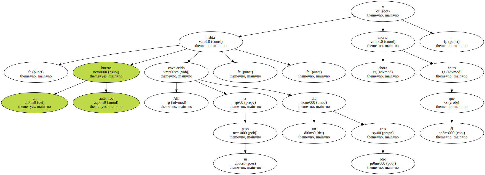
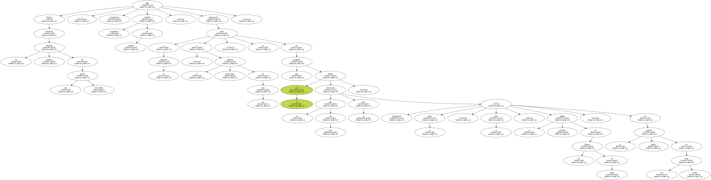
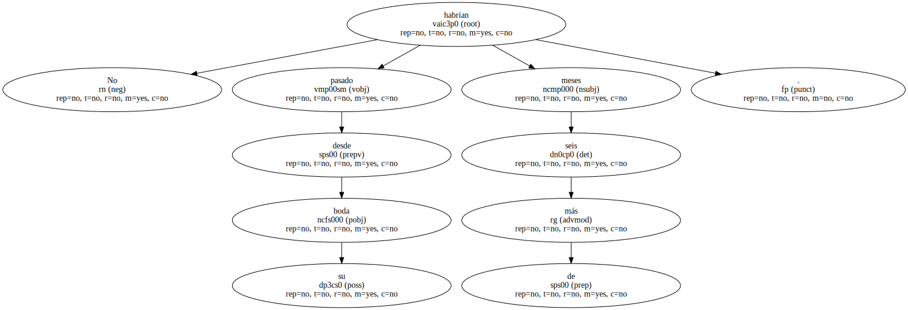
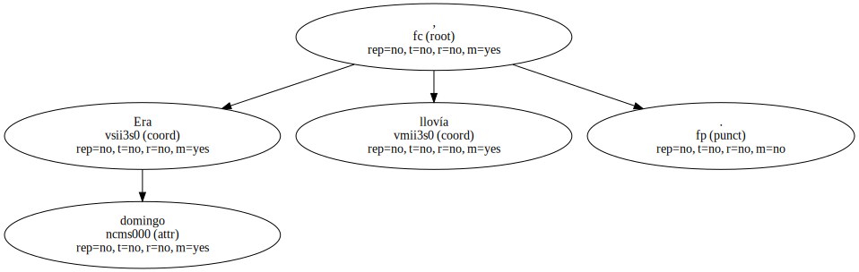
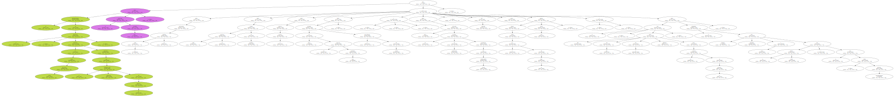
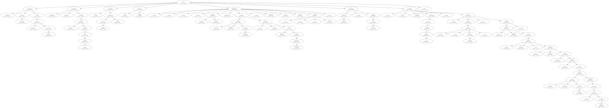
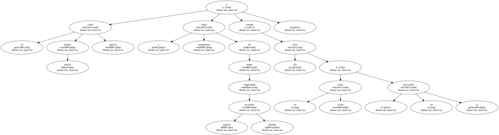
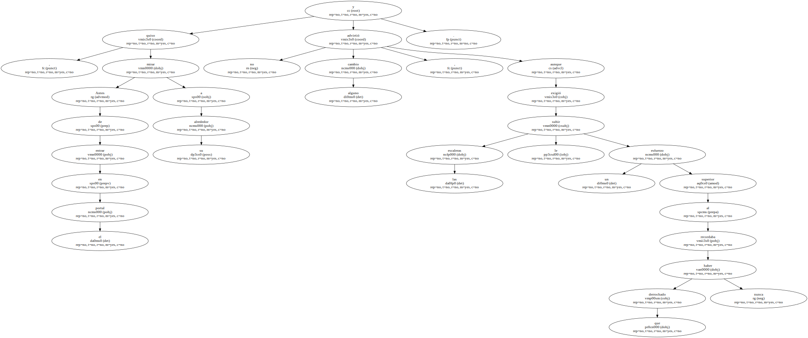
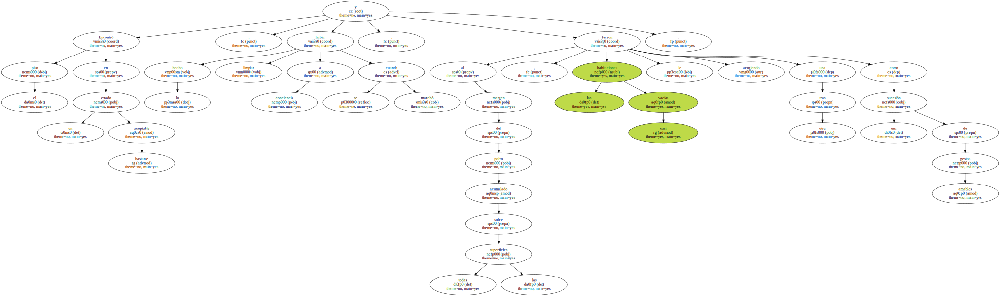

Allí , un huerto auténtico había envejecido a su paso , un día tras otro , y ahora moría antes que él.
Cuando descubrió los primeros síntomas de esta irreversible agonía llegó a considerarse vagamente culpable de lo sucedido , atribuyendo a su deserción , a la prolongada ausencia de sus ojos , la ruina de esas tomateras que un año tras otro habían sobrevivido para él , machacando la lógica , el humo , y el periódico estallido de las litronas de cristal , con la tímida potencia de sus hojas verdes.
No habrían pasado más de seis meses desde su boda.
Era domingo , llovía.
Hasta entonces había logrado resistir.

El descubrimiento de la decoración , en cuyos torpes misterios decidiera iniciarse con la enfermiza disponibilidad de un fanático , le había resultado muy saludable , pero había aprovechado ya todas las esquinas , había llenado todos los armarios de cajoneras , había cubierto la terraza , había diseñado hasta en los más mínimos detalles la distribución del jardín , y hasta había instalado un sistema de calefacción alimentado con acumuladores solares , y era domingo , llovía , habían pasado seis meses desde el día de su boda , y el azar , que una vez fuera con él generoso hasta los límites de lo grotesco , le había abandonado para siempre , dejándole a solas con su nueva mujer y su casa nueva , espléndidamente decorada.
Le dijo a Auri que se iba al fútbol , ella le miró con Los ojos fuera de las órbitas , nunca había ido al fútbol antes , nunca iría después , sus escapadas futuras se convertirían en un hermoso trabajo de precisión , un riesgo inexistente pero siempre milimétricamente calculado , Barcelona , Vigo , Valencia , incluso Frankfurt , pero aquella tarde no tenía tiempo para pensar , no sabía exactamente lo que iba a hacer , así que cogió el coche , nuevo también , y deshizo el camino , regocijándose por su previa astucia , el repentino impulso que le había inducido a conservar su vieja casa de alquiler ocultándoselo a su socia en gananciales.
Le costó mucho trabajo aparcar y llegó a arrepentirse de haber emprendido aquella absurda excursión , cuando vivía allí no tenía coche , no lo necesitaba.
Antes de entrar en el portal , quiso mirar a su alrededor y no advirtió cambio alguno , aunque subir las escaleras le exigió un esfuerzo superior al que recordaba haber derrochado nunca.
Encontró el piso en un estado bastante aceptable , lo había hecho limpiar a conciencia cuando se marchó , y al margen del polvo acumulado sobre todas las superficies , las habitaciones casi vacías le fueron acogiendo una tras otra como una sucesión de gestos amables.
